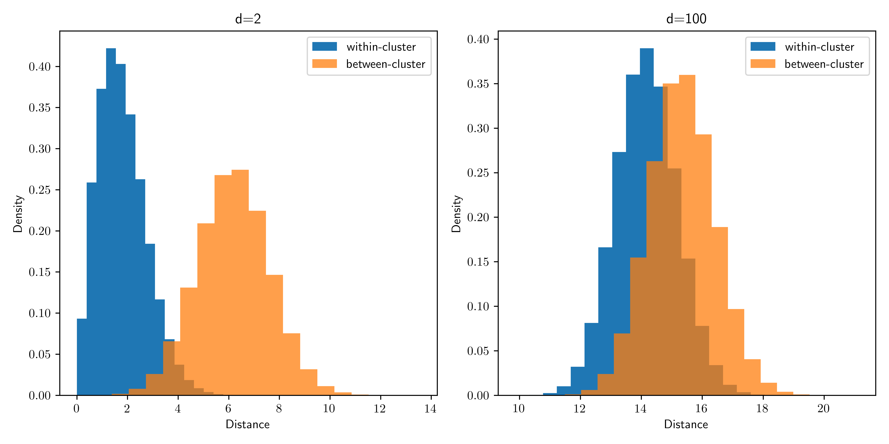

\(\newcommand{\bmu}{\boldsymbol{\mu}}\) \(\newcommand{\bSigma}{\boldsymbol{\Sigma}}\) \(\newcommand{\bfbeta}{\boldsymbol{\beta}}\) \(\newcommand{\bflambda}{\boldsymbol{\lambda}}\) \(\newcommand{\bgamma}{\boldsymbol{\gamma}}\) \(\newcommand{\bsigma}{{\boldsymbol{\sigma}}}\) \(\newcommand{\bpi}{\boldsymbol{\pi}}\) \(\newcommand{\btheta}{{\boldsymbol{\theta}}}\) \(\newcommand{\bphi}{\boldsymbol{\phi}}\) \(\newcommand{\balpha}{\boldsymbol{\alpha}}\) \(\newcommand{\blambda}{\boldsymbol{\lambda}}\) \(\renewcommand{\P}{\mathbb{P}}\) \(\newcommand{\E}{\mathbb{E}}\) \(\newcommand{\indep}{\perp\!\!\!\perp} \newcommand{\bx}{\mathbf{x}}\) \(\newcommand{\bp}{\mathbf{p}}\) \(\renewcommand{\bx}{\mathbf{x}}\) \(\newcommand{\bX}{\mathbf{X}}\) \(\newcommand{\by}{\mathbf{y}}\) \(\newcommand{\bY}{\mathbf{Y}}\) \(\newcommand{\bz}{\mathbf{z}}\) \(\newcommand{\bZ}{\mathbf{Z}}\) \(\newcommand{\bw}{\mathbf{w}}\) \(\newcommand{\bW}{\mathbf{W}}\) \(\newcommand{\bv}{\mathbf{v}}\) \(\newcommand{\bV}{\mathbf{V}}\) \(\newcommand{\bfg}{\mathbf{g}}\) \(\newcommand{\bfh}{\mathbf{h}}\) \(\newcommand{\horz}{\rule[.5ex]{2.5ex}{0.5pt}}\) \(\renewcommand{\S}{\mathcal{S}}\) \(\newcommand{\X}{\mathcal{X}}\) \(\newcommand{\var}{\mathrm{Var}}\) \(\newcommand{\pa}{\mathrm{pa}}\) \(\newcommand{\Z}{\mathcal{Z}}\) \(\newcommand{\bh}{\mathbf{h}}\) \(\newcommand{\bb}{\mathbf{b}}\) \(\newcommand{\bc}{\mathbf{c}}\) \(\newcommand{\cE}{\mathcal{E}}\) \(\newcommand{\cP}{\mathcal{P}}\) \(\newcommand{\bbeta}{\boldsymbol{\beta}}\) \(\newcommand{\bLambda}{\boldsymbol{\Lambda}}\) \(\newcommand{\cov}{\mathrm{Cov}}\) \(\newcommand{\bfk}{\mathbf{k}}\) \(\newcommand{\idx}[1]{}\) \(\newcommand{\xdi}{}\)
1.4. Some observations about high-dimensional data#
In this section, we first apply \(k\)-means clustering to a high-dimensional example to illustrate the issues that arise in that context. We then discuss some surprising phenomena in high dimensions.
1.4.1. Clustering in high dimension#
In this section, we test our implementation of \(k\)-means on a simple simulated dataset in high dimension.
The following function generates \(n\) data points from a mixture of two equally likely, spherical \(d\)-dimensional Gaussians with variance \(1\), one with mean \(-w\mathbf{e}_1\) and one with mean \(w \mathbf{e}_1\). We use gmm2 from a previous section. It is found in mmids.py.
def two_mixed_clusters(rng, d, n, w):
mu0 = np.hstack(([w], np.zeros(d-1)))
mu1 = np.hstack(([-w], np.zeros(d-1)))
return mmids.gmm2spherical(rng, d, n, 0.5, 0.5, mu0, 1, mu1, 1)
NUMERICAL CORNER: We start with \(d=2\).
seed = 535
rng = np.random.default_rng(seed)
d, n, w = 2, 100, 3.
X = two_mixed_clusters(rng, d, n, w)
Let’s run \(k\)-means on this dataset using \(k=2\). We use kmeans() from the mmids.py file.
assign = mmids.kmeans(rng, X, 2)
1044.8267883490312
208.5284166285488
204.02397716710018
204.02397716710018
204.02397716710018
Our default of \(10\) iterations seem to have been enough for the algorithm to converge. We can visualize the result by coloring the points according to the assignment.
plt.figure(figsize=(6,3))
plt.scatter(X[:,0], X[:,1], s=10, c=assign, cmap='brg')
plt.axis([-6,6,-3,3])
plt.show()
Let’s see what happens in higher dimension. We repeat our experiment with \(d=1000\).
d, n, w = 1000, 100, 3.
X = two_mixed_clusters(rng, d, n, w)
Again, we observe two clearly delineated clusters.
Show code cell source
plt.figure(figsize=(6,3))
plt.scatter(X[:,0], X[:,1], s=10, c='k')
plt.axis([-6,6,-3,3])
plt.show()
This dataset is in \(1000\) dimensions, but we’ve plotted the data in only the first two dimensions. If we plot in any two dimensions not including the first one instead, we see only one cluster.
Show code cell source
plt.figure(figsize=(6,3))
plt.scatter(X[:,1], X[:,2], s=10, c='k')
plt.axis([-6,6,-3,3])
plt.show()
Let’s see how \(k\)-means fares on this dataset.
assign = mmids.kmeans(rng, X, 2)
99518.03165136592
99518.03165136592
99518.03165136592
99518.03165136592
99518.03165136592
Our attempt at clustering does not appear to have been successful.
Show code cell source
plt.figure(figsize=(6,3))
plt.scatter(X[:,0], X[:,1], s=10, c=assign, cmap='brg')
plt.axis([-6,6,-3,3])
plt.show()
\(\unlhd\)
What happened? While the clusters are easy to tease apart if we know to look at the first coordinate only, in the full space the within-cluster and between-cluster distances become harder to distinguish: the noise overwhelms the signal.
As the dimension increases, the distributions of intra-cluster and inter-cluster distances overlap significantly and become more or less indistinguishable. That provides some insights into why clustering may fail here. Note that we used the same offset for all simulations. On the other hand, if the separation between the clusters is sufficiently large, one would expect clustering to work even in high dimension.

TRY IT! What precedes (and what follows in the next subsection) is not a formal proof that \(k\)-means clustering will be unsuccessful here. The behavior of the algorithm is quite complex and depends, in particular, on the initialization and the density of points. Here, increasing the number of data points eventually leads to a much better performance. Explore this behavior on your own by modifying the code. (For some theoretical justifications (beyond this course), see here and here.)
1.4.2. Surprising phenomena in high dimension#
a high-dimensional space is a lonely place
— Bernhard Schölkopf (@bschoelkopf) August 24, 2014
In the previous section, we saw how the contribution from a large number of “noisy dimensions” can overwhelm the “signal” in the context of clustering. In this section we discuss further properties of high-dimensional space that are relevant to data science problems.
Applying Chebyshev’s Inequality to sums of independent random variables has useful statistical implications: it shows that, with a large enough number of samples \(n\), the sample mean is close to the population mean. Hence it allows us to infer properties of a population from samples. Interestingly, one can apply a similar argument to a different asymptotic regime: the limit of large dimension \(d\). But as we will see in this section, the statistical implications are quite different.
To start explaining the quote above, we consider a simple experiment. Let \(\mathcal{C} = [-1/2,1/2]^d\) be the \(d\)-cube with side lengths \(1\) centered at the origin and let \(\mathcal{B} = \{\mathbf{x} \in \mathbb{R}^d : \|\mathbf{x}\|\leq 1/2\}\) be the inscribed \(d\)-ball.
Now pick a point \(\mathbf{X}\) uniformly at random in \(\mathcal{C}\). What is the probability that it falls in \(\mathcal{B}\)?
To generate \(\mathbf{X}\), we pick \(d\) independent random variables \(X_1, \ldots, X_d \sim \mathrm{U}[-1/2, 1/2]\), and form the vector \(\mathbf{X} = (X_1, \ldots, X_d)\). Indeed, the PDF of \(\mathbf{X}\) is then \(f_{\mathbf{X}}(\mathbf{x})= 1^d = 1\) if \(\mathbf{x} \in \mathcal{C}\) and \(0\) otherwise.
The event we are interested in is \(A = \left\{\|\mathbf{X}\| \leq 1/2\right\}\). The uniform distribution over the set \(\mathcal{C}\) has the property that \(\mathbb{P}[A]\) is the volume of \(\mathcal{B}\) divided by the volume of \(\mathcal{C}\). In this case, the volume of \(\mathcal{C}\) is \(1^d = 1\) and the volume of \(\mathcal{B}\) has an explicit formula.
This leads to the following surprising fact:
THEOREM (High-dimensional Cube) \(\idx{high-dimensional cube theorem}\xdi\) Let \(\mathcal{B} = \{\mathbf{x} \in \mathbb{R}^d \,:\, \|\mathbf{x}\|\leq 1/2\}\) and \(\mathcal{C} = [-1/2,1/2]^d\). Pick \(\mathbf{X} \sim \mathrm{U}[\mathcal{C}]\). Then, as \(d \to +\infty\),
\(\sharp\)
In words, in high dimension if one picks a point at random from the cube, it is unlikely to be close to the origin. Instead it is likely to be in the corners. A geometric interpretation is that a high-dimensional cube is a bit like a “spiky ball.”
Figure: Visualization of a high-dimensional cube as a spiky ball (Credit: Made with Midjourney)
\(\bowtie\)
We give a proof based on Chebyshev’s Inequality. It has the advantage of providing some insight into this counter-intuitive phenomenon by linking it to the concentration of sums of independent random variables, in this case the squared norm of \(\mathbf{X}\).
Proof idea: We think of \(\|\mathbf{X}\|^2\) as a sum of independent random variables and apply Chebyshev’s Inequality. It implies that the norm of \(\mathbf{X}\) is concentrated around its mean, which grows like \(\sqrt{d}\). The latter is larger than \(1/2\) for \(d\) large.
Proof: To see the relevance of Chebyshev’s Inequality, we compute the mean and standard deviation of the norm of \(\mathbf{X}\). In fact, because of the square root in \(\|\mathbf{X}\|\), computing its expectation is difficult. Instead we work with the squared norm
which has the advantage of being a sum of independent random variables – for which the expectation and variance are much easier to compute. Observe further that the probability of the event of interest \(\{\|\mathbf{X}\| \leq 1/2\}\) can be re-written in terms of \(\|\mathbf{X}\|^2\) as follows
To simplify the notation, we use \(\tilde\mu = \mathbb{E}[X_1^2]\) and \(\tilde\sigma = \sqrt{\mathrm{Var}[X_1^2]}\) for the mean and standard deviation of \(X_1^2\) respectively. Using linearity of expectation and the fact that the \(X_i\)’s are independent, we get
and
Taking a square root, we get an expression for the standard deviation of our quantity of interest \(\|\mathbf{X}\|^2\) in terms of the standard deviation of \(X_1^2\)
(Note that we could compute \(\tilde\mu\) and \(\tilde\sigma\) explicitly, but it will not be necessary here.)
We use Chebyshev’s Inequality to show that \(\|\mathbf{X}\|^2\) is highly likely to be close to its mean \(\tilde\mu \, d\), which is much larger than \(1/4\) when \(d\) is large. And that therefore \(\|\mathbf{X}\|^2\) is highly unlikely to be smaller than \(1/4\). We give the details next.
By the one-sided version of Chebyshev’s Inequality in terms of the standard deviation, we have
That is, using the formulas above and rearranging slightly,
How do we relate this to the probability of interest \(\mathbb{P}\left[\|\mathbf{X}\|^2 \leq 1/4\right]\)? Recall that we are free to choose \(\alpha\) in this inequality. So simply take \(\alpha\) such that
that is, \(\alpha = \tilde\mu \,d - 1/4\). Observe that, once \(d\) is large enough, it holds that \(\alpha > 0\).
Finally, replacing this choice of \(\alpha\) in the inequality above gives
Critically, \(\tilde\mu\) and \(\tilde\sigma\) do not depend on \(d\). So the right-hand side goes to \(0\) as \(d \to +\infty\). Indeed, \(d\) is much larger than \(\sqrt{d}\) when \(d\) is large. That proves the claim.\(\square\)
We will see later in the course that this high-dimensional phenomenon has implications for data science problems. It is behind what is referred to as the Curse of Dimensionality\(\idx{curse of dimensionality}\xdi\).
While Chebyshev’s inequality correctly implies that \(\mathbb{P}[\mathbf{X} \in \mathcal{B}]\) goes to \(0\), it does not give the correct rate of convergence. In reality, that probability goes to \(0\) at a much faster rate than \(1/d\). Specifically, it can be shown that \(\mathbb{P}[\mathbf{X} \in \mathcal{B}]\) goes to \(0\) roughly as \(d^{-d/2}\). We will not need or derive this fact here.
NUMERICAL CORNER: We can check the theorem in a simulation. Here we pick \(n\) points uniformly at random in the \(d\)-cube \(\mathcal{C}\), for a range of dimensions up to dmax. We then plot the frequency of landing in the inscribed \(d\)-ball \(\mathcal{B}\) and see that it rapidly converges to \(0\). Alternatively, we could just plot the formula for the volume of \(\mathcal{B}\). But knowing how to do simulations is useful in situations where explicit formulas are unavailable or intractable. We plot the result up to dimension \(10\).
dmax, n = 10, 1000
in_ball = np.zeros(dmax)
for d in range(dmax):
in_ball[d] = np.mean([(LA.norm(rng.random(d+1) - 1/2) < 1/2) for _ in range(n)])
plt.plot(np.arange(1,dmax+1), in_ball, c='k')
plt.show()
\(\unlhd\)
Self-assessment quiz (with help from Claude, Gemini, and ChatGPT)
1 The volume of the \(d\)-dimensional cube \(C = [-1/2, 1/2]^d\) is:
a) \(1/d\)
b) \(1/2^d\)
c) 1
d) \(2^d\)
2 In a high-dimensional cube \(C = [-1/2, 1/2]^d\), as the dimension \(d\) increases, the probability that a randomly chosen point lies within the inscribed sphere \(B = \{x \in \mathbb{R}^d : \|x\| \le 1/2\}\):
a) Approaches 1
b) Approaches 1/2
c) Approaches 0
d) Remains constant
3 Which of the following best describes the appearance of a high-dimensional cube?
a) A smooth, round ball
b) A spiky ball with most of its volume concentrated in the corners
c) A perfect sphere with uniform volume distribution
d) A flat, pancake-like shape
4 Which inequality is used to prove the theorem about high-dimensional cubes?
a) Cauchy-Schwarz inequality
b) Triangle inequality
c) Markov’s inequality
d) Chebyshev’s inequality
5 In the proof of the theorem about high-dimensional cubes, which property of the squared norm \(\|X\|^2\) is used?
a) It is a sum of dependent random variables.
b) It is a sum of independent random variables.
c) It is a product of independent random variables.
d) It is a product of dependent random variables.
Answer for 1: c. Justification: The side length of the cube is 1, and the volume of a \(d\)-dimensional cube is the side length raised to the power \(d\).
Answer for 2: c. Justification: This is the statement of the theorem “High-dimensional Cube” in the text.
Answer for 3: b. Justification: The text mentions, “A geometric interpretation is that a high-dimensional cube is a bit like a ‘spiky ball.’”
Answer for 4: d. Justification: The text explicitly states that Chebyshev’s inequality is used in the proof.
Answer for 5: b. Justification: The proof states, “we work with the squared norm
which has the advantage of being a sum of independent random variables.”